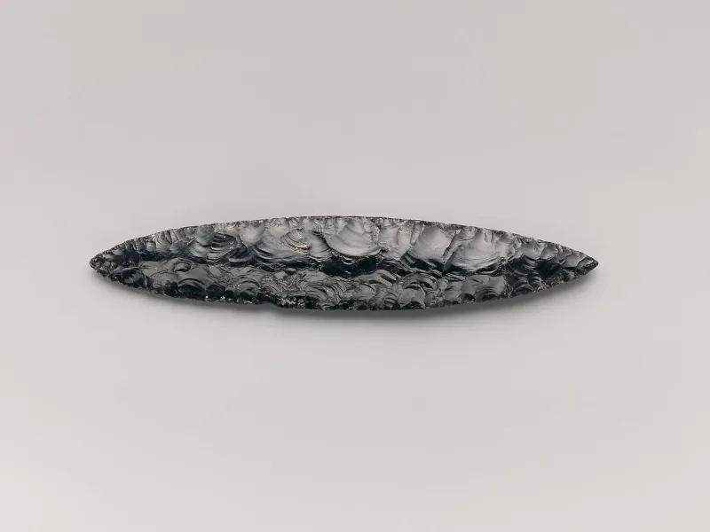
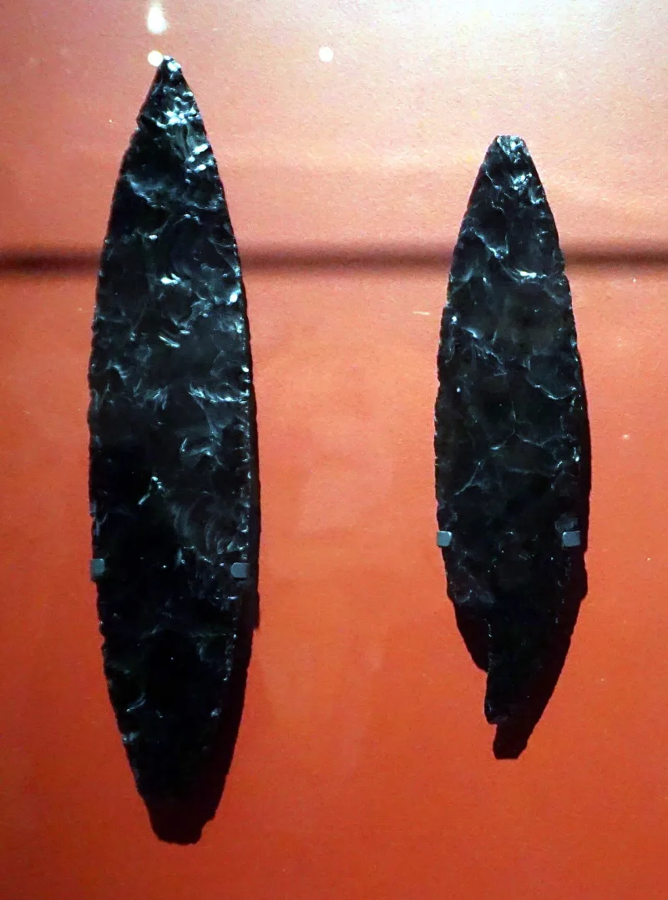

No good counter-argument has been published by LDS scholars.
Nephi's "bow of steel" carried from Arabia. Nephites teaching people to make steel and to work "in all manner of iron," around 590 to 400 BC.
And Jaredite steel swords at Ether 7:9.
The Old World half and the New World half are different arguments. Keep them apart.
One of them is answered and one is not.
A carburised steel sword was dug up at Vered Jericho in Israel, dated about 620 BC. It is in the Israel Museum.
So real steel existed in Lehi's Jerusalem. Concede that plainly.
Archaeology finds no iron working anywhere in pre-Columbian Mesoamerica. No smelting sites, no slag, no tools, no iron or steel weapons.
Metalwork of any kind shows up only around AD 600 to 800, and it never included smelting iron.
FAIR notes that steel in King James English can mean any hardened metal; the King James uses it for Hebrew bronze. Mesoamericans did work meteoric iron.
And a small Nephite industry might leave little trace. Michael Coe and Deanne Matheny have both pressed the other way.
"I'll grant you Laban's sword. What about the iron industry in America?"


The Vered Jericho sword proves Old World steel, and 'steel' can mean any hard metal.
On the Old World half the defence is strong. The Vered Jericho sword is carburised steel, dated about 620 BC, and held in the Israel Museum. So 'most precious steel' was real in Lehi's Jerusalem. That is a genuine vindication.
For the New World, FAIR makes three points. 'Steel' in King James English can mean any hardened metal, and the King James uses it for Hebrew bronze. Mesoamericans did work meteoric iron. And a small Nephite industry could have left little trace, with its wording a loanshift.
Split it: the Old World half is answered, the iron in America is not.
The Old World steel is genuinely answered by the Vered Jericho sword. Concede that half plainly.
The other half is not answered. A Nephite and Jaredite iron and steel industry in the Americas has no support in the ground at all. Michael Coe and Deanne Matheny have both pressed this.
The word-meaning defence grants that no real steel was there. Yet the text has people being taught to make it.